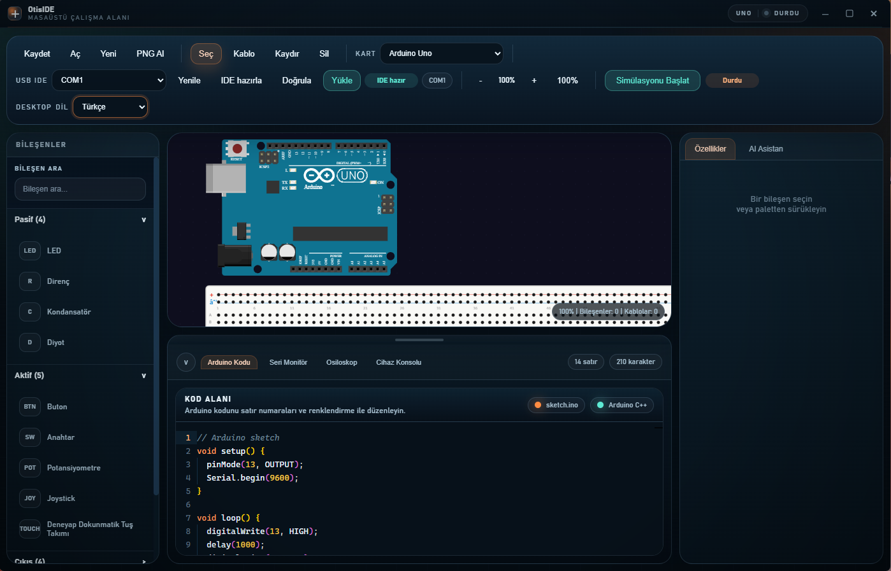

Sürükle bırak tuval
Bileşenleri breadboard deliklerine hizalayan akıllı yapışma, sağ tık menüsü, döndürme ve pin seviyesinde bağlantı noktaları.
OtisIDE; breadboard üzerine sürükle bırak devre kurma, pin farkındalıklı kablolama, Arduino kodu üretme ve kartına doğrudan yükleme işlerini tek pencerede toplar.

OtisIDE 1.3.0, Türkçe arayüz. Solda bileşen paleti, ortada devre tuvali, sağda özellikler ve yapay zekâ paneli, altta kod editörü.
Devre çizimi, kod ve donanım iletişimi ayrı ayrı programlara dağılmaz; hepsi aynı çalışma alanında durur.
Bileşenleri breadboard deliklerine hizalayan akıllı yapışma, sağ tık menüsü, döndürme ve pin seviyesinde bağlantı noktaları.
Kart pinleri, breadboard delikleri ve bileşen bacakları arasında renk seçilebilir kablolar; kalabalık pinler için otomatik açılım.
Groq, OpenAI, Gemini veya kendi OpenAI uyumlu sunucun. Devreyi kurar, kabloları çizer ve Arduino kodunu yazar.
Arduino CLI'yi kendisi indirir, kartını tanır, çekirdeği kurar; doğrula ve yükle butonlarıyla kod doğrudan karta gider.
Seri monitör, cihaz konsolu, osiloskop grafiği ve problu multimetre ile devreyi çalışırken izle.
Arayüz tek tıkla dil değiştirir; Deneyap kartları ve modülleri hazır kütüphanede gelir.
Her kartın pin yerleşimi ayrı tanımlıdır; kabloyu yanlış pine bağlamak zorlaşır.
Kurulum sihirbazı klasör seçimine izin verir, masaüstü ve başlat menüsü kısayollarını oluşturur.
Yukarıdaki indirme butonu OtisIDE-1.4.1-x64.exe dosyasını verir. 64 bit Windows 10 veya 11 gerekir.
Kurulum klasörünü seç, ileri de. Kurulum bittiğinde OtisIDE masaüstünden açılabilir.
USB kablosunu tak, üst çubuktan cihazı seç ve IDE Hazırla de. Arduino CLI ilk açılışta otomatik iner.
Windows için kurulum sihirbazlı sürüm. Kurulum sonrası internet olmadan da çizim, kod ve simülasyon çalışır.
Dosya doğrulama (SHA-256): 8b358e8827f79b81ef91b6ade5fad7c5ff340b00e16cb043b74c2f860a0aa70e
OtisIDE ücretsizdir, ancak yapay zekâ paneli kendi API anahtarınla çalışır. Groq, OpenAI, Google Gemini veya OpenAI uyumlu herhangi bir adres (örneğin bilgisayarında çalışan Ollama) kullanılabilir. Anahtar yalnızca kendi bilgisayarında saklanır.
Hayır. OtisIDE, Arduino CLI'yi ilk IDE Hazırla isteğinde kendi klasörüne indirir ve kartın için gerekli
çekirdeği kurar. Bu adım için internet bağlantısı gerekir.
Evet. Devre tuvali, kod editörü ve simülasyon çevrimdışı çalışır. Yalnızca yapay zekâ istekleri ve Arduino CLI / kart çekirdeği indirmeleri bağlantı ister.
Tam bir SPICE simülatörü değildir. digitalWrite, delay, Serial.print,
LED, servo, motor ve LCD gibi davranışları hafif bir çalışma zamanıyla canlandırır; amaç hızlı prototip ve öğretimdir.
Şu an hazır kurulum dosyası yalnızca Windows için üretiliyor. Kaynak koddan npm run electron:dev ile
diğer sistemlerde de çalıştırabilirsin.
Projeler seçtiğin klasöre .json olarak kaydedilir. Aynı dosyayı Aç ile geri yükleyebilir,
tuvali PNG olarak dışa aktarabilirsin.